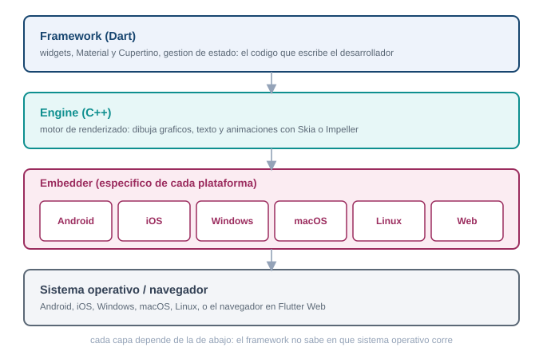
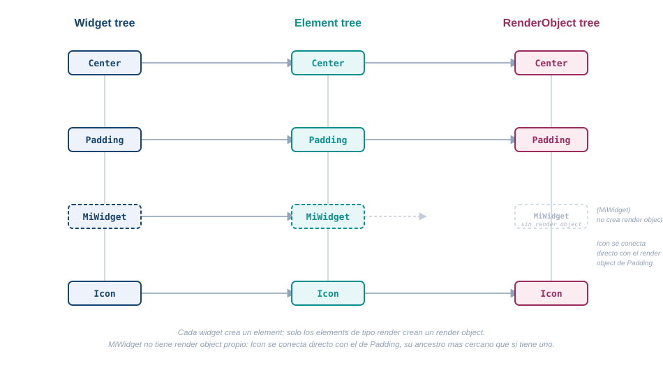
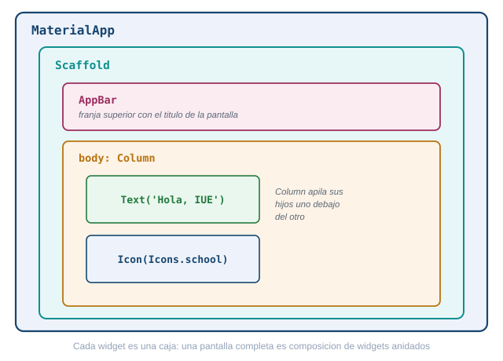
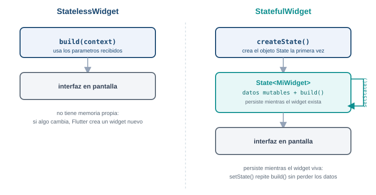
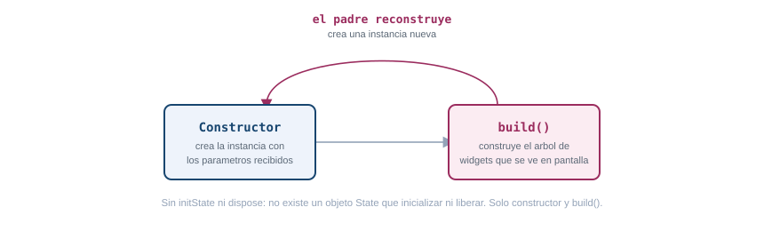
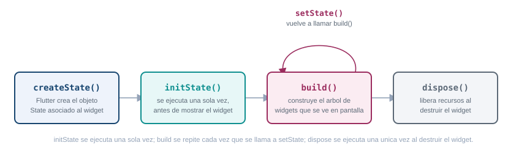
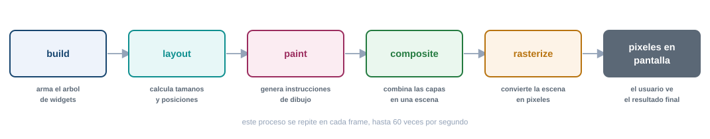
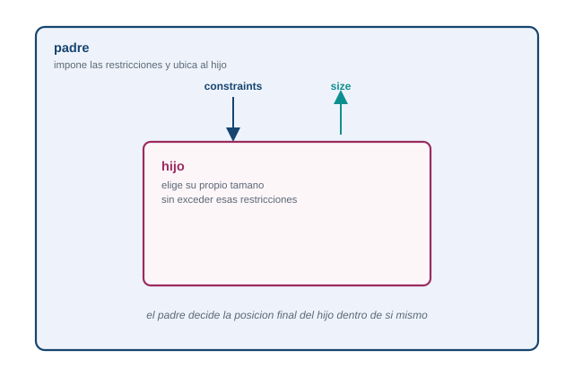
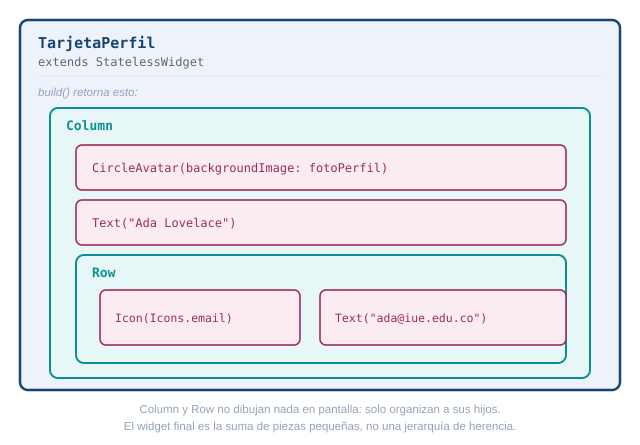
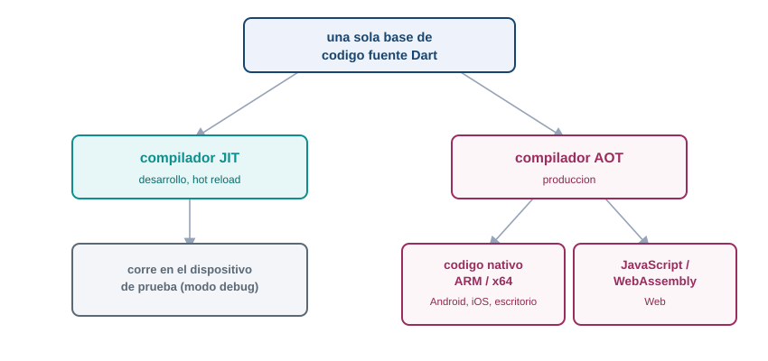

Arquitectura de Flutter, cómo se estructura un programa multiplataforma
1 Qué problema resuelve Flutter
Antes de este tema ya creaste un proyecto Flutter, lo corriste en un emulador y le diste estado propio con setState. Funcionó, pero probablemente lo hiciste sin preguntarte qué pasaba detrás de cada línea. Esta guía responde esa pregunta: cómo está construido Flutter por dentro, para que dejes de escribir widgets a ciegas y empieces a entender por qué se comportan como se comportan.
El problema que resuelve Flutter es concreto: una empresa que quiere una app en Android, en iOS, tal vez también en web y en escritorio, necesita hoy equipos separados por plataforma, cada uno con su propio lenguaje, su propio conjunto de bugs y su propio calendario de entregas. Flutter propone una sola base de código en Dart que produce apps nativas para las seis plataformas que soporta.
Esa promesa suena simple, pero cumplirla no es trivial: si Flutter delegara el dibujo de la interfaz en los controles nativos de cada sistema operativo, arrastraría las inconsistencias entre plataformas que ese mismo objetivo busca evitar. La solución que eligió el equipo de Flutter fue más radical: no reutilizar los widgets nativos de ningún sistema operativo, sino traer su propio motor de dibujo y renderizar cada píxel por su cuenta. Entender por qué esa decisión funciona, y qué capas hacen falta para sostenerla, es el objetivo de esta guía. Ninguna parte de lo que sigue es código para copiar: es el mapa conceptual que necesitas antes de seguir construyendo pantallas.
2 Arquitectura en capas: framework, engine y embedder
Flutter se organiza en tres capas apiladas, cada una construida sobre la de abajo. De arriba hacia abajo: el framework, el engine y el embedder.

Framework en Dart, engine en C++, embedder específico de cada plataforma.
El framework, escrito en Dart
El framework es la capa que tocas todos los días: es Dart puro, y es donde vive el código que escribes en lib/main.dart. Por dentro se organiza en subcapas, cada una construida sobre la anterior:
- foundation. Las clases y servicios base que usa todo lo demás.
- rendering. El árbol de objetos que calculan tamaño, posición y pintado (
RenderObject), con el modelo de constraints que ves más adelante en esta guía. - widgets. Las descripciones inmutables y reactivas de la interfaz: la capa donde vive casi todo lo que escribes.
- Material y Cupertino. La capa de diseño visual: los widgets que imitan el estilo de Android (Material Design) o de iOS (Cupertino), construidos encima de todo lo anterior.
Junto a estas se ubican animation, painting y gestures, tres librerías de la capa fundacional que dan soporte a animaciones, dibujo de bajo nivel y reconocimiento de gestos.
El engine, escrito en C++
El engine es la capa intermedia, escrita en C++. Expone al framework una interfaz llamada dart:ui y se encarga de todo lo que Dart por sí solo no puede hacer: correr el runtime del lenguaje, compilarlo, calcular el layout de texto, ofrecer primitivas gráficas, manejar entrada y salida de archivos y de red, y rasterizar cada frame para entregarlo a la GPU. El engine también aloja los canales de plataforma (platform channels) y FFI, los mecanismos que usa Flutter para comunicarse con código nativo cuando lo necesita, por ejemplo para leer un sensor del teléfono.
El rasterizado lo hace un motor de gráficos que vive dentro del engine. Durante varios años ese motor fue Skia, pero desde Flutter 3.27 Impeller es el motor por defecto en iOS (el único disponible, sin opción de volver a Skia) y en Android con API 29 o superior (con Vulkan disponible; si el dispositivo no lo soporta, cae a OpenGL). Desde Flutter 3.47 Impeller también es el motor por defecto en macOS, Linux y Windows, aunque en escritorio todavía existe una bandera para volver a Skia, una opción que la documentación oficial anuncia que va a desaparecer. La excepción es Flutter Web: en 2026 sigue usando Skia compilado a WebAssembly, sin fecha confirmada de migración a Impeller.
El embedder, específico de cada plataforma
El embedder es la capa más baja, y es la única que cambia por completo según el sistema operativo. En Android está escrito en Java o Kotlin más C++; en iOS y macOS, en Swift u Objective-C; en Windows y Linux, en C++; en la web, se compila a JavaScript o WebAssembly. Su trabajo es alojar el engine dentro del ciclo de vida nativo de cada plataforma: gestionar la ventana o la actividad, recibir la entrada del usuario (toques, teclado, mouse), conectarse al bucle de eventos del sistema operativo y entregarle a la GPU la superficie donde Flutter va a dibujar.
Por qué Flutter dibuja sus propios píxeles
La alternativa más obvia a esta arquitectura sería que Flutter tradujera cada widget a un control nativo del sistema operativo: un botón de Flutter se convertiría en un UIButton en iOS o en un Button de Android. Esa es, de hecho, la estrategia de otros frameworks multiplataforma. Flutter la descarta y en su lugar dibuja cada píxel por su cuenta, con su propio motor gráfico, y la documentación oficial explica esta decisión con tres argumentos:
- Consistencia. El mismo píxel se ve igual en todas las plataformas y en todas las versiones de sistema operativo, porque no depende de cómo cada fabricante implemente sus controles nativos.
- Rendimiento. No hay una capa de traducción entre el widget de Flutter y un control nativo: el código Dart compilado corre directo y renderiza directo a la GPU.
- Extensibilidad. Cualquier desarrollador puede crear un widget completamente nuevo, con cualquier apariencia, sin las restricciones que impone un kit de controles nativos.
Esta decisión es la raíz de todo lo que viene después en esta guía: si Flutter dibuja sus propios píxeles, necesita su propio pipeline completo (build, layout, paint, composite y rasterizado, que ves más adelante) y su propia forma de representar la interfaz antes de convertirla en píxeles: los tres árboles de la siguiente sección.
3 Los tres árboles: widgets, elements y render objects
Cuando escribes una pantalla en Flutter, en apariencia estás describiendo un solo árbol de widgets. Por debajo, Flutter mantiene tres árboles paralelos que colaboran: el árbol de widgets, el árbol de elements y el árbol de render objects.

El widget describe, el element persiste y guarda el estado, el render object calcula y pinta.
Un widget es una descripción inmutable de configuración. “Inmutable” quiere decir que, una vez creado, no cambia: si algo en la interfaz necesita verse distinto, Flutter no modifica el widget existente, crea uno nuevo. Esto pasa constantemente, cada vez que se ejecuta build(), y por eso los widgets están diseñados para ser baratos de crear y de destruir. La consecuencia directa de la inmutabilidad es que un widget no puede recordar nada por sí mismo: no guarda su posición en la jerarquía ni conserva ningún dato de un frame al siguiente.
Ahí entra el element. Un element es una instancia mutable que persiste entre frames, y funciona como puente entre la configuración (el widget) y la implementación visual (el render object). Cada element retiene la estructura lógica del árbol, y si el widget correspondiente tiene estado, es el element el que guarda el objeto State asociado. El BuildContext que recibe cada build() es, en realidad, una referencia a ese element: por eso te sirve para ubicar dónde está un widget dentro del árbol y para acceder a recursos que proveen los widgets ancestros.
El render object es el que hace el trabajo pesado: calcula tamaño, posición y pintado en coordenadas visuales absolutas. No todo widget genera un render object, solo los que heredan de RenderObjectWidget; muchos widgets son puramente de composición y no tienen contraparte directa en este árbol. Por eso el árbol de render objects es más pequeño que el árbol de elements, no una copia exacta de él.
Por qué no basta un solo árbol
Se podría pensar que tres árboles son una complicación innecesaria: por qué no colapsar todo en una sola estructura. La documentación oficial de Flutter da tres razones para no hacerlo.
Primero, rendimiento: cuando algo cambia en el layout, Flutter solo necesita recorrer el árbol de render objects, que es más pequeño gracias a la composición. Segundo, separación de responsabilidades: el protocolo de los widgets y el protocolo de los render objects se especializan cada uno en su tarea, lo que reduce la superficie de la API y el riesgo de errores. Tercero, seguridad de tipos: el árbol de render puede garantizar en tiempo de ejecución que sus hijos usan el sistema de coordenadas correcto, mientras que los widgets de composición pueden ser agnósticos a ese detalle.
Hay además un motivo práctico: los widgets manejan coordenadas lógicas (dependientes de si el idioma se lee de izquierda a derecha o al revés), mientras que los render objects trabajan siempre en coordenadas visuales absolutas, izquierda y derecha fijas. Esa conversión ocurre una sola vez, justo en el traspaso del árbol de widgets al árbol de render, y no se repite en cada layout o cada pintado, que ocurren con mucha más frecuencia que un build completo.
Cuando el estado cambia, por ejemplo con setState, Flutter no recorre todo el árbol comparando cada nodo contra su versión anterior. Marca como sucio (dirty) el element correspondiente, y en la siguiente fase de build recorre solo los elements sucios, saltándose los que no cambiaron. La reconciliación tampoco es un diffing completo del árbol: para cada lista de hijos, Flutter compara tipo en tiempo de ejecución y key con un algoritmo lineal. Si el widget nuevo es idéntico por referencia al anterior, el recorrido se corta ahí mismo. Si tipo y key coinciden, el element existente se actualiza con la nueva configuración y conserva su State y su render object, sin recrearlos. Si no coinciden, el element viejo se descarta y se crea uno nuevo. Este mecanismo es el que permite que un widget padre construya una instancia nueva de un widget hijo en cada build sin que ese hijo pierda su estado interno: Flutter encuentra y reutiliza el State correcto por su cuenta.
Un widget se reconstruye por completo en cada build(): la instancia anterior desaparece y se crea una nueva. Aun así, si ese widget tiene estado (por ejemplo, un contador con setState), ese estado no se pierde entre reconstrucciones. Con lo que acabas de leer sobre los tres árboles, explica por qué el estado sobrevive aunque el widget se destruya y se vuelva a crear en cada build. No escribas código: responde con el mecanismo, en un párrafo.
El estado no vive en el widget, vive en el element. El widget es solo una descripción inmutable que se recrea en cada build, pero el element que lo representa persiste entre frames. Cuando Flutter reconstruye el árbol, compara el widget nuevo con el anterior por tipo en tiempo de ejecución y por key: si coinciden, el element existente se actualiza con la configuración nueva pero conserva el mismo objeto State que ya tenía, con todos sus valores intactos. El widget muere y renace en cada build; el element, y el State que guarda, sobreviven mientras el tipo y la key sigan coincidiendo.
4 Todo es un widget: composición sobre herencia
La filosofía central de Flutter es que todo elemento de interfaz es un widget. No solo lo que ves en pantalla (un texto, un botón, un icono): también el espaciado es un widget (Padding), la alineación es un widget (Center), la animación es un widget (AnimatedContainer). Esto es una decisión de diseño deliberada: en vez de que un botón tenga una propiedad interna para su relleno, envuelves ese botón con un widget Padding que le agrega ese comportamiento desde afuera.
Esta forma de trabajar se llama composición, y se opone a la herencia. En un modelo por herencia, para agregarle una capacidad a un componente extenderías su clase y sobrescribirías métodos. En un modelo por composición, envuelves el componente con otro widget más especializado, sin tocar el original. Flutter eligió composición de forma consistente en toda su API: una interfaz compleja no es una clase gigante con muchas propiedades, es un árbol de widgets pequeños, cada uno con una sola responsabilidad, combinados unos dentro de otros.

Cada widget agrega una sola capacidad, envolviendo al anterior.
StatelessWidget frente a StatefulWidget
Dentro de esta filosofía, todo widget cae en una de dos categorías.
Un StatelessWidget nunca cambia una vez construido. Su apariencia depende solo de los parámetros que recibió al crearse: si esos parámetros no cambian, el widget se ve siempre igual. Icon, IconButton y Text son ejemplos oficiales.
Un StatefulWidget es dinámico: puede cambiar su apariencia en respuesta a una interacción del usuario o a la llegada de nuevos datos. Checkbox, Radio, Slider, InkWell, Form y TextField son ejemplos oficiales. La clave de su dinamismo es que el estado mutable no vive en el widget mismo (que sigue siendo inmutable, como todos), sino en un objeto State separado, asociado al element como viste en la sección anterior. Esa separación es la que permite que el widget siga siendo una descripción liviana mientras el estado persiste aparte.

El StatelessWidget no guarda nada; el StatefulWidget delega su estado a un objeto State aparte.
La forma general de un StatelessWidget es mínima:
class Saludo extends StatelessWidget {
const Saludo({super.key});
@override
Widget build(BuildContext context) {
return const Text("Hola");
}
}No hay más que eso: una clase, un constructor y un método build().
build() y BuildContext
Todo widget, sea Stateless o Stateful, implementa un método build() que describe la parte de la interfaz que le corresponde, devolviendo un árbol de widgets más básicos. En un StatelessWidget, build() vive en la propia clase del widget. En un StatefulWidget, build() vive dentro del objeto State, no en la clase del widget: por eso _MyHomePageState, que ya viste en el Tema 2, tiene su propio build() separado de MyHomePage.
build() recibe un BuildContext como parámetro. Ya viste en la sección anterior que el BuildContext es, en el fondo, una referencia al element: le dice al widget dónde está ubicado dentro del árbol, y por eso le permite acceder a información o recursos que proveen sus ancestros (un Theme, un Navigator, un MediaQuery) sin que esos ancestros necesiten conocer a sus descendientes. Es una vía de comunicación de arriba hacia abajo, no al revés.
5 Ciclo de vida de un StatelessWidget
Antes de ver el ciclo completo de un StatefulWidget, vale la pena mirar el caso simple. Un StatelessWidget no tiene pasos intermedios porque no existe ningún objeto State que crear, inicializar ni liberar: su ciclo se reduce a dos momentos.

Constructor y build(), nada más. Sin initState ni dispose: no hay State que inicializar ni liberar.
- Constructor. Crea la instancia del widget con los parámetros que recibió. Ocurre cada vez que su padre reconstruye esa parte del árbol: no es un paso que corra “una vez”, como
initState()en unStatefulWidget, sino cada vez que hace falta una descripción nueva. build(). El framework lo llama para obtener el árbol de widgets que representa. No hay una ejecución inicial separada de las siguientes: cada reconstrucción del padre crea un widget nuevo y llama a subuild()de nuevo.
No hay equivalente a setState() ni a dispose(). Sin un objeto State que guarde nada entre reconstrucciones, no hay un valor que actualizar ni un recurso propio que cancelar o liberar antes de que el widget desaparezca del árbol.
6 Ciclo de vida de un StatefulWidget
Ya viste el caso simple. Un StatefulWidget agrega pasos porque, a diferencia del StatelessWidget, sí tiene un objeto State que crear, inicializar y liberar aparte del widget. Falta ver cuándo ocurre cada paso de ese ciclo.

createState e initState corren una vez. build se repite con cada setState. dispose cierra el ciclo.
A nivel conceptual, el ciclo de vida de un StatefulWidget sigue esta secuencia:
createState(). El framework llama a este método para crear el objetoStateasociado al widget. Ocurre una sola vez, cuando el widget entra al árbol por primera vez.initState(). Se llama una única vez, justo después de crear elState. Es el lugar para inicializar variables o preparar cualquier cosa que el widget necesite antes de mostrarse.build(). Produce la interfaz visible a partir del estado actual. Se ejecuta al menos una vez al principio, y se vuelve a ejecutar cada vez que el estado cambia.setState(). No es parte de la secuencia inicial, es el disparador que la reinicia parcialmente: cuando el código de la aplicación llamasetState()(tras un toque del usuario o la llegada de un dato nuevo), le avisa al framework que el estado cambió, y eso provoca quebuild()se ejecute otra vez con los valores actualizados. Esto puede repetirse cualquier cantidad de veces mientras el widget siga vivo.dispose(). Se llama una única vez, cuando el widget se retira permanentemente del árbol. Es el lugar para liberar recursos, cancelar suscripciones o hacer cualquier limpieza pendiente antes de que el objetoStatedesaparezca.
La idea que conecta toda esta secuencia con lo que viste en el Tema 2 es que setState() no cambia la pantalla por sí mismo: solo marca el element como sucio, tal como viste en la sección de los tres árboles. El repintado real ocurre después, en el pipeline de renderizado que ves a continuación.
7 El pipeline de renderizado
Convertir un árbol de widgets en píxeles en pantalla no es un solo paso, son cinco fases consecutivas: build, layout, paint, composite y rasterizado.

Cinco fases, una sola pasada por fase cuando es posible.
En build, cada widget se traduce a un element persistente, y para los que generan render object (los RenderObjectWidget) se crea o se actualiza el nodo correspondiente en el árbol de render. En layout, Flutter recorre el árbol de render y calcula tamaño y posición de cada nodo, con el modelo de constraints que ves en la siguiente sección. En paint, cada render object ya dimensionado dibuja su apariencia (color, texto, bordes) sobre un canvas. En composite, lo pintado se organiza en layers y se arma una escena completa. En rasterizado, esa escena se convierte en los píxeles concretos que la GPU entrega a la pantalla, con Impeller (o Skia en la web) como motor.
El principio detrás de este diseño es que cada fase tiene una responsabilidad acotada y recorre el árbol una sola vez cuando es posible, en vez de acumular pasadas adicionales. Ese principio es justo el que hace posible el modelo de constraints.
El modelo de constraints
El layout en Flutter sigue una regla fija, resumida en una frase: las constraints bajan, los tamaños suben, y el padre decide la posición.

Las constraints bajan, los tamaños suben, el padre decide la posición.
Una constraint es un conjunto de cuatro números: ancho mínimo, ancho máximo, alto mínimo y alto máximo. El proceso funciona así: el padre le entrega esas constraints a cada hijo (pueden ser distintas para cada uno); el hijo, respetando esos límites, decide su propio tamaño y lo comunica hacia arriba; el padre, ya con los tamaños de todos sus hijos, decide dónde posicionar a cada uno. Ningún widget puede tener el tamaño que quiera libremente, solo el que le permite su padre, y ningún widget decide por sí mismo su propia posición en pantalla.
Esta negociación ocurre en una sola pasada, de arriba hacia abajo y luego de vuelta hacia arriba, sin necesidad de recalcular ni de repetir el recorrido. Por eso el costo del layout crece de forma lineal con el número de nodos, algo que contrasta con modelos como el de CSS en la web, donde distintos modos de layout (bloque, en línea, flex, grid) pueden requerir varias pasadas y recálculos frente a un mismo cambio de contenido.
Un estudiante envuelve un Container con width: 300 dentro de un Row, y el ancho que definió nunca se respeta en pantalla: el Container termina más angosto de lo que pidió. Con el modelo de constraints que acabas de leer, explica por qué puede pasar esto. No es un error de sintaxis ni un bug de Flutter.
Un widget nunca decide su propio tamaño de forma absoluta, solo dentro de lo que le permiten las constraints que recibió de su padre. Si el Row (o algún widget más arriba en el árbol) le está pasando al Container una constraint de ancho máximo menor a 300, el Container no puede salirse de ese límite por más que su propiedad width diga 300: las constraints bajan y mandan. El width: 300 es una preferencia que el Container intenta cumplir, pero solo dentro del rango que le impuso su padre. Para confirmar la causa exacta habría que revisar qué constraints está entregando el widget padre, no el Container en sí.
Todo lo que has visto hasta acá (árboles paralelos, composición sobre herencia, ciclo de vida, pipeline de una sola pasada) converge en la misma idea: una interfaz de Flutter nunca es un widget aislado, es una jerarquía de piezas pequeñas que se comunican con reglas estrictas y predecibles en cada dirección.

Una interfaz de Flutter nunca es un widget aislado, es una jerarquía de piezas pequeñas.
8 Compilación multiplataforma: JIT en desarrollo, AOT en producción
Todo lo anterior explica cómo Flutter convierte widgets en píxeles dentro de un dispositivo. Falta la última pieza: cómo el mismo código Dart llega a correr, con rendimiento cercano al nativo, en Android, en iOS, en escritorio y en la web.

JIT con recarga en caliente en desarrollo, AOT nativo en producción, dart2js o dart2wasm en la web.
En desarrollo, cuando corres flutter run en modo debug, Dart se compila con un compilador Just In Time (JIT): la Dart VM traduce el código en tiempo de ejecución. Esto permite recompilación incremental, y esa es la base técnica de la recarga en caliente que ya usaste en el Tema 2: Flutter inyecta el código nuevo en la app que sigue corriendo, sin reiniciarla. El modo debug prioriza velocidad de iteración sobre rendimiento: no está optimizado para producción.
En producción, con flutter build o flutter run --release, Flutter cambia a Ahead Of Time (AOT): el compilador traduce el código Dart directo a código máquina nativo (ARM o x64) antes de que la app arranque, con eliminación del código que no se usa (tree shaking). Ya no hay intérprete corriendo en tiempo real, solo instrucciones nativas listas para la CPU, y por eso la recarga en caliente deja de estar disponible en modo release.
Flutter Web sigue una lógica parecida pero con destinos distintos: en desarrollo usa dartdevc, que también permite recarga en caliente dentro del navegador; en producción compila a JavaScript optimizado con dart2js, o de forma alternativa a WebAssembly con dart2wasm. El soporte de Wasm es estable desde Flutter 3.24, pero en 2026 sigue siendo una opción que hay que pedir de forma explícita con la bandera --wasm, no el destino de compilación por defecto; además, no todos los navegadores lo soportan igual de bien: Chrome lo soporta de forma estable desde su versión 119, mientras que Safari en iOS todavía no.
Este modelo dual (mismo lenguaje, semántica casi idéntica en todos los modos) es lo que sostiene la promesa con la que abrió esta guía: una sola base de código Dart, escrita una vez sobre el framework que ya conoces, corre en las plataformas que Flutter soporta sin reescribirse, con rendimiento cercano al nativo porque en ningún punto del camino hay un intérprete de HTML y CSS ajeno a la app, ni un puente que serialice mensajes hacia controles nativos: el código Dart compilado dibuja directo, con el motor propio que viste al principio de esta guía.
Un compañero de curso pregunta por qué la recarga en caliente funciona perfecto durante el desarrollo, pero no existe en la versión final que se instala en un teléfono. Con lo que acabas de leer sobre JIT y AOT, explica la razón técnica, sin usar la palabra “porque sí”.
La recarga en caliente depende de que exista un intérprete corriendo en el dispositivo mientras la app está viva: eso es exactamente lo que hace la Dart VM en modo JIT, y es lo que le permite inyectar código nuevo sobre la app que ya está corriendo, sin reiniciarla. En producción, Flutter compila con AOT: el código Dart ya se convirtió en instrucciones nativas antes de que la app arrancara, no hay intérprete corriendo, solo binario ejecutándose directo en la CPU. Sin intérprete, no hay dónde inyectar código nuevo en caliente: cualquier cambio necesita una compilación completa y una nueva instalación.
9 Del Tema 2 a lo que sigue
Todo lo que viste acá ya estaba presente, sin que lo notaras, en el _MyHomePageState que construiste el tema anterior. El StatefulWidget con su State separado, el setState() que marca el element como sucio, el build() que se vuelve a ejecutar y produce un árbol nuevo de widgets: esa app mínima con un contador ya recorría, en cada toque de pantalla, el ciclo completo de esta guía, desde el widget hasta el píxel.
Lo que sigue en el curso construye sobre estos cimientos, no al lado de ellos. Cuando trabajes con Material Design y con la librería más amplia de widgets de Flutter, cada Scaffold, cada Column, cada ListView que uses es, otra vez, composición sobre herencia: piezas pequeñas combinadas siguiendo las mismas reglas de constraints y del mismo pipeline que ya conoces. Entender la arquitectura no fue un desvío antes de programar interfaces: es la base que te permite leer cualquier widget nuevo con el que te encuentres el resto del semestre, y saber por qué se comporta como se comporta.
10 Recursos
- Visión arquitectónica oficial de Flutter: https://docs.flutter.dev/resources/architectural-overview
- Inside Flutter, sobre los tres árboles y la reconciliación: https://docs.flutter.dev/resources/inside-flutter
- Modelo de constraints en el layout: https://docs.flutter.dev/ui/layout/constraints
- Modos de compilación (JIT y AOT): https://docs.flutter.dev/testing/build-modes
- Impeller, el motor de renderizado: https://docs.flutter.dev/perf/impeller
Lenguajes de computación para móviles. Fundación Universitaria María Cano. Facultad de Ingeniería. Semestre 2026-02.
Transparencia. La redacción de esta guía contó con el apoyo de inteligencia artificial, usando el modelo Claude Sonnet 5 de Anthropic. Todo el contenido fue revisado y validado.